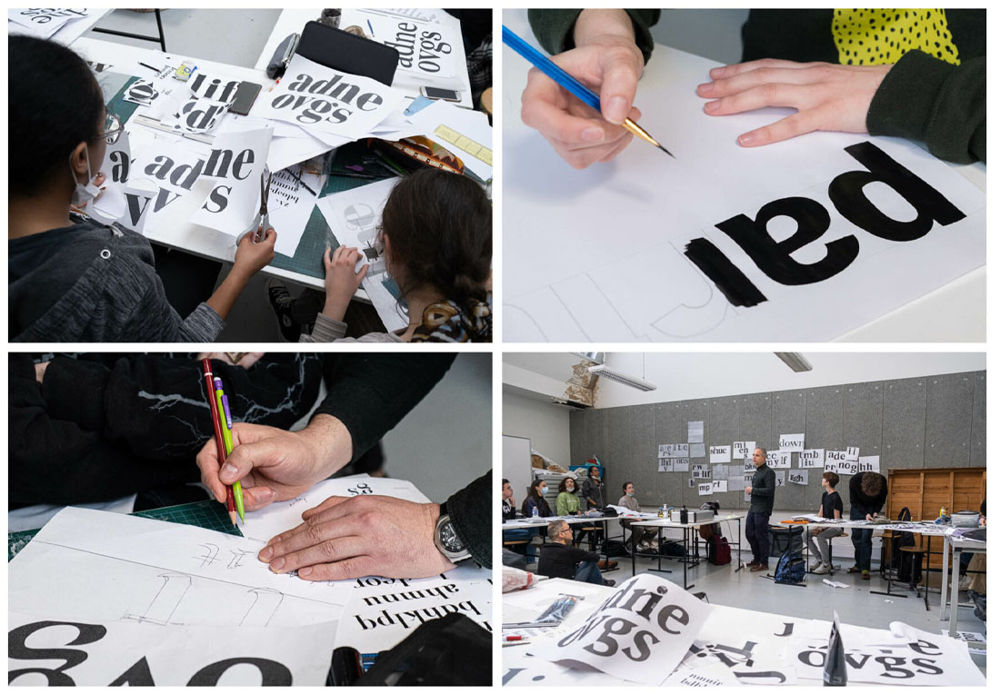
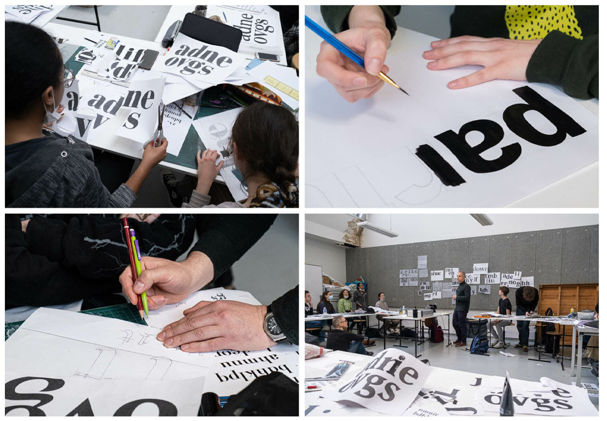

N°2
Titre
Dos Guardienas
Date
Mai 2022
Commanditaire
Thomas Bouville
États
Workshop
Contexte
Travail réalisé avec le typographe Thomas Bouville, dans le cadre du Workshop «dessin de caractères»
Durée
1 semaine
Contrainte
Reconstituer une typographie à partir de cinq lettres, en gardant l’esprit de la typographie originelle. Utiliser la réalisation pour composer une affiche sur le titre d’une chanson choisie.
Réponse
La typographie (un caractère avec empattement, avec un beau jeu de courbes et de plein et déliés), me paraissait idéale pour traduire la sensualité du morceau « Dos Guardiennas » par le Buena Vista Social Club. Dans la chanson, deux personnes semblent se chercher, se rapprocher puis s’éloigner comme dans une danse, un tango. Il ne s’attire, mais ne se touche jamais et c’est cette tension que j’ai voulu mettre en valeur dans ma composition.
Outils et technique
Dessin technique et encre chinoise.
Suivant